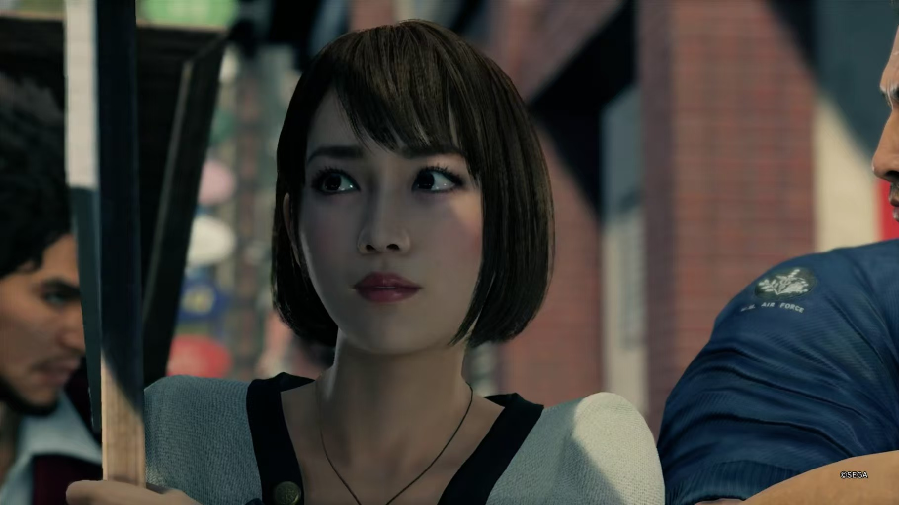

到了谷底就只能一路向上了-如龙7
简单总评
久闻如龙系列的大名，却一直没尝试过 前段时间看到ps会免列表里躺着的光与影的去向开始尝试，一发不可收拾，甚至白天在工位上脑子里想的都是一级棒。 大抵花了小一个月的时间，近100小时基本打完了如龙7。
总体游戏可以打四颗星。 ★★★★☆
剧情写的不错，开头cg埋下伏笔但是我随后就忘了，简单进入黑道生活后急转直下入狱，随后开启在横滨的新旅程（具体内容先不剧透）。主角就像是传统热血日漫主角那样的热血笨蛋，结实伙伴，消灭坏蛋，但是在营造的不错的街头氛围感和大大小小的支线、对话中又有着丰富的日常感。 结局的时候面对大boss的嘴遁和一把鼻涕一把泪哭的有点太过圣母，不过总体瑕不掩瑜。
战斗部分是挺传统的jrpg，4人小队回合制。我有看到网上很多评论对这代如龙由即时战斗转为回合制对不满，不过也看到很多人很喜欢全新的回合制，大概就是大船掉头时的正常现象。鉴于没玩过系列前作的战斗模式，只看本作，回合制给出的各种技能还挺搞的，我非常喜欢看各个极技的无厘头画面。（难波给人工呼吸就赶紧跳开大喊不用不用，纱酱给人工呼吸就是冒桃心。）后期看累了也可以各种跳过。战斗中主要是使用拳、刀、枪、冰、雷、火等攻击来打击不同弱点属性的敌人，也有一定的战斗博弈，不过相比于p5的击倒与全攻击而言，似乎除了伤害外并没有其他能够反应弱点的地方。主要的扣分部分是难度曲线有点离谱，十二章的双岛、十四章的桐生、终章的千禧塔、通过后的超级千禧塔和最终超级千禧塔都有不得不刷级的地方。级别刷少了打不过，级别刷多了又变得几乎没有战斗策略，自动战斗都能过。（大量的重复刷的内容还是容易带来厌倦）听说8代的游戏性有了大幅增长，等我过段时间试试。
小游戏的部分还挺不错的公司经营一玩玩一天。而且你甚至可以在如龙里玩雀魂（其实就是日麻，立直麻将啦，这里要注意一下日麻和国内麻将不一样的点是需要有役，之前教我爸爸玩雀魂时候老头就经常忘了需要役而和不了）
日常部分我太喜欢了。以前玩p5的日常部分、火纹风花雪月的日常养成时候就十分喜欢那种和其他游戏角色相处的游戏内容。如龙7虽然没有那么多，但是大量的队伍对话、极具写实氛围感的街景和现实背景故事仍然让日常部分极具生活感。
开始严重剧透
——————分割线——————
主线部分
春日像是小时候男孩子想成为的那种角色，理想主义，做争取的事情，只要用拳头把坏人都揍一顿就好了（有点像路飞吧，如果海贼都是路飞这样怕是海军没必要管伟大航路了）。开篇让小弟还回去小孩们被骗的钱，不去强收家有病母老哥的债，即使回去没法交差。（好傻啊，哪怕你把少主钱上的封纸撕掉，泽成也没那么容易发现）。随后就是一段紧密的剧情，荒川真澄出场，春日加入荒川组的背景，千禧年时刻的到来，顶罪、监狱隐忍、出狱发现世界天翻地覆。剧情开始环环相扣，颇有一种不一口气打完不畅快的感觉。（我当时就是本想晚上玩一会就睡觉却一直玩到了陪足利哥闯进荒川老爹的饭局）
横滨篇是最长的，剧情自然不似开头结尾那般紧凑，反而是有种松弛的生活感，和足利、街友身无分文都不舍得打车，奔跑在横滨大街时候都忘记了荒川老爹的那一枪和兜里莫名其妙的错版假钞。 后来纱酱加入，四个人的队伍越看越jrpg模版，却感觉如果野野宫还活着的话，这应该就是他们最闲适的一段日子了。（后来有钱就不这样了，打车才几个钱，只恨地图传送点太少） （放张纱酱美照） 
第十二章开始主线又变得开始紧凑，漂白组织的背后故事，秘书长的背景，青木辽的阴谋，主角团挥舞起拳头打败一个个敌人然后发现一重又一重的反转，故事也来到关西的苍天堀，东京的神室町。
（苍天堀的原型应该是现实中大阪市的道顿堀，刚好今年去过一次，只能说游戏中的建模确实十分有那个味道，场景建的很不错。另外，日本的团子🍡甜的齁人，现实中不要妄想自己一个人连吃三个）
主角团也不再是在底层慢慢打拼，而是成为各位大佬的座上宾。
在近江总部和传说中的黑道们一起战斗更是令人热血沸腾。
 后面更是直接对决东京都知事兼秘书长的青木团伙。我老婆也说黑帮老大抱错孩子的剧本略显狗血俗套，不过塞在这里也并非突兀。
最后硬要嘴炮劝青木辽自首让我差点没绷住，只能一直内心告诉自己日系男主角都是这个德行。
后面更是直接对决东京都知事兼秘书长的青木团伙。我老婆也说黑帮老大抱错孩子的剧本略显狗血俗套，不过塞在这里也并非突兀。
最后硬要嘴炮劝青木辽自首让我差点没绷住，只能一直内心告诉自己日系男主角都是这个德行。
打完最后结局想起主线叫做光与影的去向。龙组描绘了同一天出生的两个人走向完全相反的道路。一番自出生以来就总是一无所有，收养他的泡泡浴店店长都早早死去，视若再造生父的荒川对他当胸一枪也无法改变他对父亲的爱。而真斗从小就是少主，衣食无忧，仅有的腿疾也在美国被钞能力治好。如果只看表象，作为里主角的真斗拿的就是莫欺少年穷版本的主角剧本，堀之内和那个女人看不起我，那我就拿到比你们都高的权力，却实质上一步步走入黑暗，虽然脱离了黑道的身份，行为却比黑道更加可恨。（想起来大表哥2里达奇说那些资本家不过是换了文明的方式穿着西装打劫） 结尾被嘴遁成功的青木终于醒悟却被他的狂热信徒久米一刀杀死的结尾带出了一种因果宿命感，作为本作主线剧情的收尾还算是一个不错的句号。
支线内容
如龙7的支线内容是真的不错，大街上跑着跑着自然而然就做完了所有的支线也不会觉得重复无聊。 印象比较深的支线一个是神龙赛车，对我一个漂移苦手来讲为了完成神龙杯和神龙战士的比赛，我开车开的换来了两本综合能力提升的书。另一个就是小枫这一段。 故事大抵是一番在街上见到了曾经在神室町憧憬他的女孩，然后再陪她一起度过一天，再在她的面前击败捣乱的混混，可是饭店、游戏厅的店员都诧异的看着他，因为女孩的饮料从来没有喝过。 最后一刻一番手上的照片中女孩也消失了，只剩下一番一个人孤独的在河边。 我不知道这个女孩是不是真的存在过，还是说只是经受轮番打击的一番在脑中幻想出的温馨画面，只是感觉这个支线做完后整个人都惆怅了几分。 其他的支线也很有意思，还玩了不少梗，比如冲田博士要做总司号，比如江湖宝贝，还有绘里公司经营的超级大支线。（总是好奇绘里是不是应该加些和主线人物的互动）
其他杂谈
通过一遍主线后，再看第一章其实有好多伏笔，比如开场的那个小剧场的各种隐喻，我第一次玩的时候甚至不记得那个小孩是荒川老爹。春日和阿光对话是阿光说他打架总是会先观察，春日也说自己会想象成勇者的样子，对应战斗的回合制。
春日的各种行为总是让人好奇他是活雷锋还是黑道，尤其是有一句明晃晃的“我觉得黑道不是恃强凌弱，而是应该帮扶弱小”。不过主角的善良并不是对黑道的洗白。现实中的黑道几乎不会有春日、荒川这般的人，可如我们打过的一个个的boss，比如小流氓郑这种可比比皆是，哪怕是荒川老爹的荒川组，真斗随便挥霍的钱又是从哪来的呢。就像海贼王里草帽海贼团看着比海军还爱做好事，可绝大多数海贼的生活还是打家劫舍。
可是主角团的冒险真是让我30岁的疲惫身子又有了一种青春般的热血，春日42岁了还能从底层爬起，拉起一群信得过的好朋友自主创业，搅他个天翻地覆，看着他们从横滨一路到千禧塔，我的心好像也一直在砰砰砰的直跳，像是小时候看到动画片中的主角带着自己的伙伴站在魔王前。
总之，我很喜欢如龙7！
白金奖杯注意点
游戏版本：PS5 如龙7 光与暗的去向 国际版 （其实我还差个超级最终千禧塔没打完。但是外派出差了，只能等回家慢慢打了） 这作的奖杯都比较简单，没什么错过了就得下周目的东西，只不过需要你花些时间是刷。 主线可以大胆推，推完以后没做完的奖杯都可以在通关后模式里慢慢做，所以主线的时候大可专心品味剧情，不必担心在这里会不会错过什么奖杯
故事进度的奖杯都是流程杯，随着故事进展自然自然解锁。 几位队友的满好感度基本也是通关前都会拿到，只需要记得好感度涨到锁那里的时候去酒馆触发一下对话，解锁一下下一个等级。 主角的等级奖杯刷到70级就拿满了，不过要打千禧塔肯定要刷到99的，所以也是自然会拿到的。收集江湖宝贝之类亦是如此 支线故事40的奖杯抓着地图上的对话小冒泡慢慢做也好做。 可以参考视频 【如龙7】全52个沙雕奇葩支线合集（完结）
宴会欢谈的奖杯要注意的是宴会欢谈不是平时的队伍对话，而是吃饭时候的对话。 ![Pasted_image_20241126005028.png] 可以参考视频 【如龙7】宴会欢谈全42个
小队对话没有奖杯，但是有打工英雄的挑战，可以参考视频 【游戏天国】《人中之龙7》伙伴对话大全（羁绊对话）
打工英雄300星的奖杯相对麻烦一点。打工任务中能随手做的都可以随手做一下，起码给一颗星，挑战部分虽然不给星，但是给综合能力，也很重要。 【攻略】如龙7打工任务 - 5个失踪的人 打工任务主要做找5个失踪的人、找河童、找猫。都找齐以后可能还是不到300，然后去做叫道具，去右上角滨北公园的商店买所有的食材、种子什么的，在幸存者酒吧做所有类型的便当，在街友聚集地附近找白川妹子（流浪汉谈恋爱那个）要个汤，然后捡罐求生柜台处买任务要求的废旧家电，这些道具任务都交全了基本就够300星了。
综合能力全max的可以放在最后做，主线全通、打工300星以后可能还是差一点，这个时候可以选择跑路重复刷捏捏或者如果你爱开车的话，重复开车去换提升全综合能力的书，一次50。全max以后和所有女孩子（酒馆伊吕波、大海原宫越、浪漫制造所堇、职业介绍所里里佳、绘里、纱荣子）达成亲密关系后可以触发六艘跳隐藏支线。
其他的诸如呼叫外援30次、10中娱乐场所什么的，根据奖杯要求逐个完成即可。